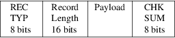
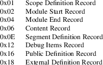
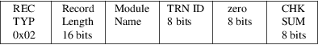
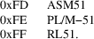
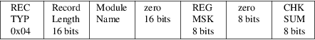
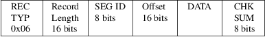

srec_aomf - Intel Absolute Object Module Format
The Absolute Object Module Format (AOMF) is a subset of the 8051 OMF. The structure of an absolute object file (the order of the records in it) is similar to that of a relocatable object file. There are three main differences: the first is that an absolute object file contains one module only, the second is that not all the records can appear in the absolute file and the third is that the records can contain only absolute information.
Generic
Record Format
Each record starts with a record type which indicates the
type of the record, and record length which contain the
number of bytes in the record exclusive of the first two
fields. The record ends with a checksum byte which contains
the 2s complement of the sum (modulo 256) of all other bytes
in the record. Therefore the sum (modulo 256) of all bytes
in the record is zero.
The record length includes the payload and checksum fields, but excludes the type and length fields.
All 16-bit fields are little-endian.

Here are some of the relevant record types:

Names are not stored as C strings. Names are stored as a length byte followed by the contents.
Structure
An AOMF file consists of a module header record (0x02),
followed by one or more content (0x06), scope (0x01) or
debug (0x12) records, and ends in a module end record
(0x04).
The records with the following types are extraneous (they may appear in the file but are ignored): 0x0E, 0x16 and 0x18 (definition records). All records which are not part of the AOMF and are not extraneous are considered erroneous.
Module Header Record

Each module must starts with a module header record. It is used to identify the module for the RL51 and other future processors of 8051 object files. In addition to the Module Name the record contains:
|
TRN ID |
The byte identifies the program which has generated this module: |

Module End Record

The record ends the module
sequence and contains the following information:
characteristics
MODULE NAME
The name of the module is given here for a consistency check. It must match the name given in the Module Header Record.
REGISTER MASK (REG MSK)
The field contains a bit for
each of the four register banks. Each bit, when set
specifies that the corresponding bank is used by the module:
Bit 0 (the least significant bit)
bank #0.
|
Bit 1 |
bank #1. |
|||
|
Bit 2 |
bank #2. |
|||
|
Bit 3 |
bank #3. |
Content Record

This record provides one or more bytes of contiguous data, from which a portion of a memory image may be constructed.
|
SEG ID |
This field must be zero. | ||
|
OFFSET |
Gives the absolute address of the first byte of data in the record, within the CODE address space. | ||
|
DATA |
A sequence of data bytes to be loaded from OFFSET to OFFSET+RECORDLENGTH−5. |
Size
Multiplier
In general, raw binary data will expand in sized by
approximately 1.02 times when represented with this
format.
http://www.intel.com/design/mcs96/swsup/omf96_pi.pdf
ftp://download.intel.com/design/mcs51/SWSUP/omf51.exe (zip
archive)
http://www.elsist.net/WebSite/ftp/various/OMF51EPS.pdf
srec_cat
version 1.65
Copyright (C) 1998, 1999, 2000, 2001, 2002, 2003, 2004,
2005, 2006, 2007, 2008, 2009, 2010, 2011, 2012, 2013, 2014,
2018, 2019, 2022 Peter Miller
The srec_cat program comes with ABSOLUTELY NO WARRANTY; for details use the ’srec_cat -VERSion License’ command. This is free software and you are welcome to redistribute it under certain conditions; for details use the ’srec_cat -VERSion License’ command.